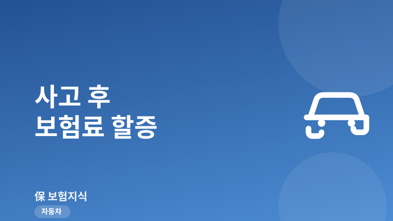
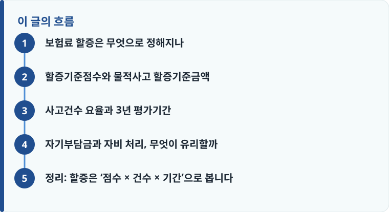

자동차보험 할증은 사고 크기로 점수를 매기는 ‘사고점수 할증’과, 사고를 몇 번 냈는지 보는 ‘사고건수 할증’이 겹쳐 적용됩니다.
대물·자차 같은 물적사고는 회사가 정한 ‘물적사고 할증기준금액(보통 50만·100만·150만·200만 원 중 선택)’을 넘는지에 따라 점수가 달라집니다.
할증 평가는 보통 직전 1년의 사고건수와 과거 3년의 사고내용을 함께 보므로, 사고 한 번의 영향이 다음 갱신 한 번으로 끝나지 않을 수 있습니다.
보험료 할증은 무엇으로 정해지나
자동차보험료가 사고 뒤에 오르는 이유는 단순히 ‘사고를 냈으니까’가 아니라, 보험사가 계약자의 위험도를 다시 평가하기 때문입니다. 이 평가의 핵심 도구가 ‘우량할인·불량할증요율’, 흔히 말하는 할인할증 제도입니다. 무사고로 한 해를 보내면 등급이 올라 보험료가 내려가고, 사고가 나면 사고 내용에 따라 등급이 내려가 보험료가 올라갑니다. 이 구조 자체가 궁금하다면 보험료가 달라지는 이유를 먼저 읽으면 전체 그림이 잡힙니다.
중요한 점은 할증이 하나의 숫자로 결정되지 않는다는 것입니다. 실제로는 두 가지 잣대가 동시에 작동합니다. 하나는 사고의 크기를 점수로 환산하는 ‘사고점수 할증’이고, 다른 하나는 사고를 몇 번 냈는지 세는 ‘사고건수 할증’입니다. 같은 접촉사고라도 수리비가 얼마였는지, 그리고 그 해에 사고가 처음인지 두 번째인지에 따라 다음 갱신 보험료가 달라지는 이유가 여기에 있습니다.
또 하나 오해하기 쉬운 부분은, 내가 잘못한 사고뿐 아니라 상대방 과실이 큰 사고도 처리 방식에 따라 기록에 남을 수 있다는 점입니다. 내 과실이 전혀 없는 사고를 상대 보험으로 처리하면 내 등급에는 영향이 없지만, 상대가 무보험이거나 뺑소니여서 내 자차로 먼저 처리하면 손해액이 잡히면서 점수 산정 대상이 될 수 있습니다. 그래서 할증을 이해할 때는 ‘누가 잘못했나’보다 ‘내 보험에서 얼마가 나갔나’를 기준으로 보는 것이 실제 계산에 더 가깝습니다.
할증기준점수와 물적사고 할증기준금액
사고점수 할증은 사고 종류와 피해 크기에 따라 점수를 매기는 방식입니다. 사람이 다친 대인사고는 부상 등급에 따라 점수가 높게 매겨지고, 차량·재물만 손상된 물적사고는 별도의 기준으로 점수를 계산합니다. 통상 1점당 한 등급이 내려가고, 등급이 내려갈수록 보험료가 올라가는 구조입니다. 자기 차 수리를 위한 자차사고 역시 점수 산정 대상에 포함됩니다.
여기서 반드시 알아야 할 개념이 ‘물적사고 할증기준금액’입니다. 이는 대물배상과 자기차량손해로 나간 손해액이 이 금액을 넘느냐 아니냐에 따라 점수를 다르게 매기는 기준선입니다. 계약할 때 보통 50만 원, 100만 원, 150만 원, 200만 원 중에서 고르게 되는데, 예를 들어 기준금액을 200만 원으로 설정했다면 물적 손해액이 200만 원 이하일 때는 상대적으로 낮은 점수가, 초과하면 더 높은 점수가 적용됩니다. 기준금액을 높게 잡으면 작은 사고에서 할증 부담이 줄지만, 대신 평상시 보험료는 조금 올라가는 맞교환 관계가 있습니다. 이런 담보별 선택이 보험료에 어떻게 반영되는지는 자동차보험 기본 구조에서 함께 확인할 수 있습니다.

사고건수 요율과 3년 평가기간
점수만으로 끝나면 이해가 쉬울 텐데, 실제로는 ‘사고건수’가 한 번 더 반영됩니다. 사고건수 요율은 손해액의 크기와 무관하게, 최근 일정 기간에 사고를 몇 번 냈는지 자체를 위험 신호로 보는 방식입니다. 그래서 손해액이 크지 않은 가벼운 접촉사고라도 그 해에 두 번, 세 번 반복되면 건수 기준에서 추가 할증이 붙을 수 있습니다. 사고 금액이 작다고 안심할 수 없는 이유가 여기에 있습니다.
평가 기간도 오해가 많은 부분입니다. 보험사는 보통 직전 1년(전전계약 종료일 무렵까지)의 사고건수를 할증에 직접 반영하고, 그와 별도로 과거 3년간의 사고 내용을 참고해 우량할인 적용 여부를 판단합니다. 쉽게 말해 사고 한 번의 흔적이 다음 갱신 1회로 사라지는 것이 아니라, 이후 몇 해 동안 ‘무사고 할인으로 되돌아가는 속도’를 늦추는 형태로 남습니다. 사고 없이 여러 해를 보내야 다시 할인 등급으로 회복되므로, 체감상 한 번의 사고가 3년 안팎에 걸쳐 영향을 준다고 이해하면 됩니다. 사고가 났을 때 접수와 처리 흐름이 궁금하다면 자동차보험 사고접수 방법을 참고하세요.
작성·검수 기준
이 글은 특정 보험사 상품이나 요율을 권유하기 위한 것이 아니라, 자동차보험 할증이 어떤 원리로 계산되는지 일반적인 기준을 설명하기 위해 작성했습니다. 할증기준점수, 물적사고 할증기준금액 선택지, 사고건수 요율, 평가기간은 보험사와 가입 시점, 개별 요율 규정에 따라 세부 수치가 달라질 수 있습니다.
정확한 할증 결과와 갱신 보험료는 본인 증권의 요율 규정과 보험회사 안내를 확인하는 것이 가장 정확하며, 요율 구조가 낯설다면 보험료가 달라지는 이유를 함께 읽어 보시기 바랍니다.
자기부담금과 자비 처리, 무엇이 유리할까
작은 사고에서 늘 고민되는 것이 ‘보험으로 처리할까, 그냥 내 돈으로 낼까’입니다. 자차사고는 대개 수리비의 20%를 자기부담금으로 내되, 최소 20만 원에서 최대 50만 원 사이로 하한과 상한이 정해져 있습니다. 이 자기부담금을 낸다고 해서 할증이 면제되는 것은 아니며, 보험사가 지급한 손해액을 기준으로 점수와 건수가 매겨집니다. 그래서 수리비가 자기부담금과 크게 차이 나지 않는 소액사고라면, 보험 처리로 얻는 실익보다 할증으로 잃는 금액이 더 클 수 있습니다.
- 먼저 실제 수리 견적을 받아 손해액이 물적사고 할증기준금액을 넘는지 확인합니다.
- 보험 처리 시 부담할 자기부담금(수리비의 20%, 하한·상한 범위)을 계산합니다.
- 보험사에 ‘이 사고를 접수하면 예상 할증이 얼마인지’를 문의해 향후 몇 년간 늘어날 보험료를 추정합니다.
- 자비 처리 금액과 (자기부담금 + 예상 할증 총액)을 비교합니다.
- 이미 그 해에 다른 사고가 있었는지, 건수 할증이 겹치는지까지 따져 최종 결정합니다.
다만 사고 상대가 있거나 대인 요소가 조금이라도 있으면 임의로 자비 처리했다가 나중에 분쟁이 생길 수 있으므로, 판단이 어려울 때는 일단 접수 상담부터 받는 편이 안전합니다. 운전자 개인의 형사·행정 리스크까지 함께 대비하고 싶다면 운전자보험이 자동차보험과 어떻게 역할을 나누는지도 확인해 두면 좋습니다.
정리: 할증은 ‘점수 × 건수 × 기간’으로 봅니다
자동차보험 할증은 사고 하나의 금액만 보고 판단하기 어렵습니다. 손해 크기를 점수로 환산하는 사고점수 할증, 반복 여부를 보는 사고건수 요율, 그리고 3년 안팎에 걸쳐 회복 속도를 늦추는 평가기간이 함께 작동하기 때문입니다. 여기에 물적사고 할증기준금액을 어떻게 설정했는지와 자기부담금 구조까지 얹으면, 같은 사고라도 사람마다 결과가 달라집니다.
다른 보험 정보 글이 궁금하다면 보험지식 블로그에서 이어 읽어 보세요. 가입 전에는 반드시 약관과 상품설명서를 확인하는 것이 가장 안전한 방법입니다.